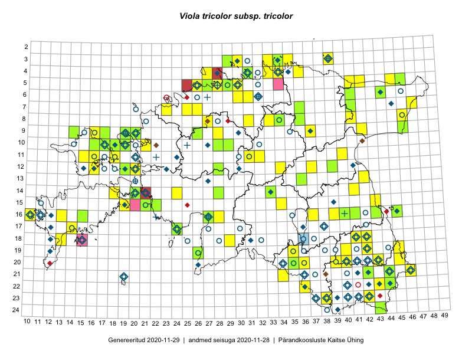

Viola tricolor subsp. tricolor — aaskannike
Kaardile koondatud taksonid: Viola tricolor subsp. tricolor L. (116); Viola tricolor L. (46)

Kaart põhineb 162 kirjel, neist:
vaatlusi 106
eksemplare 56
Kaasaegsed1 leiukohad asuvad 112 ruudus.
Andmed “Eesti taimede levikuatlasest”,2 sulgudes ruutude arv:3
● 1971–2005 (75)
○ 1921–1970 (20)
△ kuni 1920 (0)
+ hävinud (0)
? kaheldav (0)
Lisaruudud teistest andmebaasidest:4
ELF: 2006– . . . (2)
PKÜ: 2006– . . . (3)
ELF: 1971–2005 (1)
PKÜ: 1997–2005 (12)
| Ruut | Vaatleja(d) | Vaatlusaeg | Kirje PlutoFis |
|---|---|---|---|
| 18-41 | Malle Leht | 2015-05-22 | ruut/ala: Viola tricolor subsp. tricolor L. |
| 19-40 | Malle Leht | 2015-05-16 | ruut/ala: Viola tricolor subsp. tricolor L. |
| 12-37 | Peedu Saar, Timo Luhamäe | 2015-05-11 | ruut/ala: Viola tricolor subsp. tricolor L. |
| 09-14 | Peedu Saar, Toomas Kukk | 2015-05-27 | ruut/ala: Viola tricolor subsp. tricolor L. |
| 09-16 | Peedu Saar, Toomas Kukk | 2015-05-27 | ruut/ala: Viola tricolor subsp. tricolor L. |
| 20-45 | Rein Kalamees, Kersti Püssa | 2015-05-28 | ruut/ala: Viola tricolor subsp. tricolor L. |
| 16-45 | Toomas Kukk, Eerik Leibak | 2015-07-29 | ruut/ala: Viola tricolor subsp. tricolor L. |
| 07-47 | Peedu Saar, Sander Laherand | 2015-05-31 | ruut/ala: Viola tricolor subsp. tricolor L. |
| 20-39 | Malle Leht, Raivo Leht | 2015-07-28 | ruut/ala: Viola tricolor subsp. tricolor L. |
| 20-40 | Malle Leht, Raivo Leht | 2015-07-27 | ruut/ala: Viola tricolor subsp. tricolor L. |
| 05-30 | Rein Kalamees, Kersti Püssa | 2015-05-27 | ruut/ala: Viola tricolor subsp. tricolor L. |
| 11-31 | Ott Luuk, Toivo Sepp | 2015-07-12 | ruut/ala: Viola tricolor subsp. tricolor L. |
| 03-35 | Rein Kalamees, Kersti Püssa | 2015-05-31 | ruut/ala: Viola tricolor subsp. tricolor L. |
| 04-34 | Rein Kalamees, Kersti Püssa | 2015-06-02 | ruut/ala: Viola tricolor subsp. tricolor L. |
| 04-36 | Rein Kalamees, Kersti Püssa | 2015-05-31 | ruut/ala: Viola tricolor subsp. tricolor L. |
| 20-35 | Ott Luuk, Hannes Pehlak | 2015-06-12 | ruut/ala: Viola tricolor subsp. tricolor L. |
| 18-42 | Toomas Kukk, Kersti Tambets, Timo Luhamäe, Janika Sammasto, Sten Mander | 2014-07-29 | ruut/ala: Viola tricolor subsp. tricolor L. |
| 08-46 | Thea Kull, Eerik Leibak | 2015-07-23 | ruut/ala: Viola tricolor subsp. tricolor L. |
| 14-24 | Toomas Kukk, Ott Luuk, Sander Laherand | 2014-08-24 | ruut/ala: Viola tricolor subsp. tricolor L. |
| 08-33 | Jana-Maria Habicht, Ester Valdvee | 2015-05-29 | ruut/ala: Viola tricolor subsp. tricolor L. |
| 08-34 | Jana-Maria Habicht, Ester Valdvee | 2015-05-09 | ruut/ala: Viola tricolor subsp. tricolor L. |
| 11-15 | Eeva-Maria Jeletsky, Tarmo Niitla | 2015-06-27 | ruut/ala: Viola tricolor subsp. tricolor L. |
| 11-16 | Eeva-Maria Jeletsky, Tarmo Niitla | 2015-06-22 | ruut/ala: Viola tricolor subsp. tricolor L. |
| 12-16 | Eeva-Maria Jeletsky, Tarmo Niitla | 2015-06-21 | ruut/ala: Viola tricolor subsp. tricolor L. |
| 19-35 | Kai Rünk, Ülle Jõgar, Illi Tarmu | 2015-05-16 | ruut/ala: Viola tricolor subsp. tricolor L. |
| 15-19 | Mari Reitalu, Sirje Azarov | 2015-05-16 | ruut/ala: Viola tricolor subsp. tricolor L. |
| 18-13 | Mari Reitalu, Oliver Parrest | 2015-05-27 | ruut/ala: Viola tricolor subsp. tricolor L. |
| 16-10 | Sirje Azarov, Mari Reitalu | 2015-05-22 | ruut/ala: Viola tricolor subsp. tricolor L. |
| 05-45 | Meeli Mesipuu | 2015-06-01 | ruut/ala: Viola tricolor subsp. tricolor L. |
| 13-42 | Meeli Mesipuu, Thea Kull | 2015-08-14 | ruut/ala: Viola tricolor subsp. tricolor L. |
| 17-14 | Karin Kikas, Elle Rajandu | 2015-07-22 | ruut/ala: Viola tricolor subsp. tricolor L. |
| 05-42 | Kaili Orav, Silvia Pihu | 2015-06-18 | ruut/ala: Viola tricolor subsp. tricolor L. |
| 05-41 | Kaili Orav, Silvia Pihu | 2015-06-18 | ruut/ala: Viola tricolor subsp. tricolor L. |
| 09-28 | Aat Sarv | 2015-05-02 | ruut/ala: Viola tricolor subsp. tricolor L. |
| 03-29 | Ott Luuk, Mari Reitalu, Tõnu Ploompuu | 2014-06-01 | ruut/ala: Viola tricolor subsp. tricolor L. |
| 05-29 | Peedu Saar, Sander Laherand | 2013-07-07 | ruut/ala: Viola tricolor subsp. tricolor L. |
| 08-27 | Aat Sarv | 2015-05-18 | ruut/ala: Viola tricolor subsp. tricolor L. |
| 07-23 | Tõnu Ploompuu | 2016-05-07 | ruut/ala: Viola tricolor subsp. tricolor L. |
| 15-43 | Thea Kull, Peedu Saar | 2016-05-05 | ruut/ala: Viola tricolor subsp. tricolor L. |
| 09-46 | Eerik Leibak | 2016-05-12 | ruut/ala: Viola tricolor subsp. tricolor L. |
| 16-43 | Rein Kalamees, Eerik Leibak | 2016-06-13 | ruut/ala: Viola tricolor L. |
| 23-42 | Rein Kalamees, Eerik Leibak | 2016-06-14 | ruut/ala: Viola tricolor subsp. tricolor L. |
| 19-45 | Toomas Kukk, Tiit Hallikma | 2016-06-17 | ruut/ala: Viola tricolor subsp. tricolor L. |
| 11-40 | Eeva-Maria Jeletsky, Tarmo Niitla | 2016-06-05 | ruut/ala: Viola tricolor subsp. tricolor L. |
| 20-40 | Peedu Saar, Tarmo Niitla | 2016-06-17 | ruut/ala: Viola tricolor subsp. tricolor L. |
| 05-26 | Tiina Elvisto, Eerik Leibak | 2016-07-04 | ruut/ala: Viola tricolor subsp. tricolor L. |
| 15-19 | Mari Reitalu, Triin Reitalu | 2016-06-30 | ruut/ala: Viola tricolor subsp. tricolor L. |
| 10-18 | Sander Laherand, Toomas Kukk | 2016-07-07 | ruut/ala: Viola tricolor subsp. tricolor L. |
| 20-35 | Thea Kull, Eerik Leibak | 2016-07-18 | ruut/ala: Viola tricolor subsp. tricolor L. |
| 21-34 | Toomas Kukk, Susanna Vain, Raivo Kalle | 2016-07-18 | ruut/ala: Viola tricolor subsp. tricolor L. |
| 11-32 | Aat Sarv, Jaak-Albert Metsoja | 2016-07-21 | ruut/ala: Viola tricolor subsp. tricolor L. |
| 09-42 | Ott Luuk, Eerik Leibak | 2016-08-05 | ruut/ala: Viola tricolor subsp. tricolor L. |
| 18-29 | Aat Sarv, Raivo Kalle | 2016-07-20 | ruut/ala: Viola tricolor subsp. tricolor L. |
| 21-44 | Peedu Saar, Karin Kikas | 2016-08-18 | ruut/ala: Viola tricolor subsp. tricolor L. |
| 22-44 | Peedu Saar, Karin Kikas | 2016-08-19 | ruut/ala: Viola tricolor subsp. tricolor L. |
| 21-46 | Timo Luhamäe, Meeli Mesipuu | 2016-06-14 | ruut/ala: Viola tricolor subsp. tricolor L. |
| 20-36 | Thea Kull, Ott Luuk | 2016-08-23 | ruut/ala: Viola tricolor subsp. tricolor L. |
| 05-29 | Toomas Kukk, Sander Laherand | 2016-08-29 | ruut/ala: Viola tricolor subsp. tricolor L. |
| 10-19 | Rein Kalamees, Liina Oja | 2016-07-07 | ruut/ala: Viola tricolor subsp. tricolor L. |
| 09-37 | Mari Reitalu, Triin Reitalu | 2016-07-11 | ruut/ala: Viola tricolor subsp. tricolor L. |
| 14-18 | Mari Reitalu, Sirje Azarov | 2016-08-09 | ruut/ala: Viola tricolor subsp. tricolor L. |
| 06-31 | Peedu Saar, Toomas Kukk | 2016-09-08 | ruut/ala: Viola tricolor subsp. tricolor L. |
| 07-25 | Helle Mäemets, Tiina Elvisto | 2016-07-05 | ruut/ala: Viola tricolor subsp. tricolor L. |
| 03-33 | Peedu Saar, Timo Luhamäe | 2016-07-26 | ruut/ala: Viola tricolor subsp. tricolor L. |
| 08-41 | Peedu Saar, Timo Luhamäe | 2016-07-29 | ruut/ala: Viola tricolor subsp. tricolor L. |
| 03-29 | Kadi-Liis Kesler, Maria Ksenofontov | 2015-07-20 | ruut/ala: Viola tricolor subsp. tricolor L. |
| 03-30 | Kadi-Liis Kesler, Maria Ksenofontov | 2015-07-20 | ruut/ala: Viola tricolor subsp. tricolor L. |
| 06-30 | Kadi-Liis Kesler, Tiina Elvisto | 2015-05-26 | ruut/ala: Viola tricolor subsp. tricolor L. |
| 04-33 | Meeli Mesipuu, Timo Luhamäe | 2016-07-28 | ruut/ala: Viola tricolor subsp. tricolor L. |
| 16-27 | Indrek Tammekänd | 2015-05-13 | ruut/ala: Viola tricolor subsp. tricolor L. |
| 22-36 | Ott Luuk, Peedu Saar | 2017-07-28 | ruut/ala: Viola tricolor subsp. tricolor L. |
| 16-39 | Thea Kull, Ott Luuk | 2017-08-01 | ruut/ala: Viola tricolor subsp. tricolor L. |
| 16-37 | Ott Luuk, Thea Kull | 2017-08-01 | ruut/ala: Viola tricolor subsp. tricolor L. |
| 07-26 | Toomas Kukk, Ilmar Uibopuu, Kadri Kuusksalu | 2017-08-08 | ruut/ala: Viola tricolor subsp. tricolor L. |
| 03-29 | Toomas Kukk | 2017-09-29 | ruut/ala: Viola tricolor subsp. tricolor L. |
| 03-30 | Peedu Saar | 2017-09-29 | ruut/ala: Viola tricolor subsp. tricolor L. |
| 05-26 | Peedu Saar, Timo Luhamäe | 2017-08-10 | ruut/ala: Viola tricolor subsp. tricolor L. |
| 12-34 | Ott Luuk, Thea Kull | 2017-08-03 | ruut/ala: Viola tricolor subsp. tricolor L. |
| 12-20 | Ott Luuk | 2014-07-27 | punkt: Viola tricolor subsp. tricolor L. |
| 12-19 | Ott Luuk | 2014-07-25 | punkt: Viola tricolor subsp. tricolor L. |
| 14-41 | Karin Kikas, Elle Rajandu | 2015-04-28 | punkt: Viola tricolor subsp. tricolor L. |
| 16-43 | Rein Kalamees, Eerik Leibak | 2016-06-13 | punkt: Viola tricolor L. |
| 03-30 | Peedu Saar | 2017-09-29 | punkt: Viola tricolor subsp. tricolor L. |
| 11-40 | Toomas Kukk, Ilmar Uibopuu | 2017-10-14 | punkt: Viola tricolor subsp. tricolor L. |
| 22-36 | Peedu Saar, Ott Luuk | 2017-07-28 | punkt: Viola tricolor subsp. tricolor L. |
| 24-43 | Meeli Mesipuu | 2017-07-31 | punkt: Viola tricolor L. |
| 24-43 | Meeli Mesipuu | 2017-07-31 | ruut/ala: Viola tricolor subsp. tricolor L. |
| 21-46 | Peedu Saar, Toomas Kukk, Ain Piir | 2018-05-16 | punkt: Viola tricolor subsp. tricolor L. |
| 12-19 | Toomas Kukk, Ilmar Uibopuu, Mari Reitalu | 2018-05-27 | ruut/ala: Viola tricolor subsp. tricolor L. |
| 11-18 | Meeli Mesipuu | 2018-07-09 | ruut/ala: Viola tricolor subsp. tricolor L. |
| 11-18 | Meeli Mesipuu | 2018-07-09 | punkt: Viola tricolor L. |
| 10-18 | Meeli Mesipuu | 2018-07-10 | punkt: Viola tricolor L. |
| 10-18 | Meeli Mesipuu | 2018-07-10 | ruut/ala: Viola tricolor subsp. tricolor L. |
| 05-27 | Meeli Mesipuu | 2019-06-22 | ruut/ala: Viola tricolor subsp. tricolor L. |
| 05-28 | Meeli Mesipuu | 2019-06-30 | ruut/ala: Viola tricolor subsp. tricolor L. |
| 18-42 | Meeli Mesipuu, Thea Kull | 2019-07-09 | punkt: Viola tricolor L. |
| 20-40 | Toomas Kukk, Indrek Tammekänd | 2019-07-09 | ruut/ala: Viola tricolor subsp. tricolor L. |
| 03-39 | Meeli Mesipuu | 2019-08-06 | ruut/ala: Viola tricolor subsp. tricolor L. |
| 03-34 | Rein Kalamees, Toomas Kukk | 2019-08-06 | ruut/ala: Viola tricolor subsp. tricolor L. |
| 18-42 | Thea Kull, Meeli Mesipuu | 2019-07-09 | ruut/ala: Viola tricolor subsp. tricolor L. |
| 10-21 | Ott Luuk | 2019-09-19 | punkt: Viola tricolor subsp. tricolor L. |
| 10-21 | Ott Luuk | 2019-09-19 | ruut/ala: Viola tricolor subsp. tricolor L. |
| 23-38 | Peedu Saar, Timo Luhamäe | 2019-07-12 | ruut/ala: Viola tricolor subsp. tricolor L. |
| 04-27 | Ott Luuk | 2019-08-02 | ruut/ala: Viola tricolor subsp. tricolor L. |
| 20-43 | Ott Luuk, Tiit Hallikma | 2019-07-09 | ruut/ala: Viola tricolor subsp. tricolor L. |
| 22-44 | Ott Luuk, Tiit Hallikma | 2019-07-12 | ruut/ala: Viola tricolor subsp. tricolor L. |
| 04-31 | J.-M. Habicht | 2011-05-27 | TAM0030831: Viola tricolor L. |
| 10-19 | Toomas Kukk | 2007-07-25 | TAA0045288: Viola tricolor L. |
| 10-18 | Toomas Kukk | 2007-07-26 | TAA0045289: Viola tricolor L. |
| 06-44 | Peedu Saar, Liina Oja | 2015-07-21 | TAA0135302: Viola tricolor L. |
| 10-29 | Peedu Saar, Thea Kull, Ott Luuk, Timo Luhamäe, Toomas Kukk | 2015-06-25 | TAA0135303: Viola tricolor L. |
| 10-28 | Peedu Saar, Thea Kull, Ott Luuk, Timo Luhamäe, Toomas Kukk | 2015-06-25 | TAA0135304: Viola tricolor L. |
| 12-39 | Peedu Saar, Eerik Leibak | 2015-08-16 | TAA0135314: Viola tricolor L. |
| 16-41 | Peedu Saar, Eerik Leibak | 2015-07-30 | TAA0135315: Viola tricolor L. |
| 05-29 | Olev Abner | 2014-09-01 | TALL C009289: Viola tricolor L. |
| 08-34 | Jana-Maria Habicht | 2015-05-09 | TAM0117889: Viola tricolor L. |
| 21-44 | J.-M. Habicht | 2014-07-19 | TAM0126896: Viola tricolor L. |
| 12-28 | Toomas Kukk, Tiit Hallikma, Indrek Tammekänd | 2015-06-09 | TAA0135022: Viola tricolor L. |
| 07-41 | Toomas Kukk, Tiit Hallikma | 2015-07-23 | TAA0135115: Viola tricolor L. |
| 10-17 | Toomas Kukk, Eerik Leibak | 2015-08-12 | TAA0135465: Viola tricolor L. |
| 16-45 | Toomas Kukk, Eerik Leibak | 2015-07-29 | TAA0135653: Viola tricolor L. |
| 16-40 | Raivo Kalle | 2007-05-09 | TAA0112753: Viola tricolor L. |
| 09-46 | Eerik Leibak | 2016-05-12 | TAA0137833: Viola tricolor L. |
| 09-46 | Eerik Leibak | 2016-05-12 | TAA0137834: Viola tricolor L. |
| 22-44 | Jaak-Albert Metsoja | 2016-06-15 | TAA0133818: Viola tricolor subsp. tricolor L. |
| 17-24 | Maret Gerz, Leena Gerz | 2015-08-12 | TAA0132749: Viola tricolor L. |
| 09-26 | Toomas Kukk | 2014-06-11 | TAA0112939: Viola tricolor subsp. tricolor L. |
| 09-14 | Peedu Saar, Toomas Kukk | 2015-05-27 | TAA0113580: Viola tricolor subsp. tricolor L. |
| 16-43 | Eerik Leibak, Rein Kalamees | 2016-06-13 | TAA0138394: Viola tricolor subsp. tricolor L. |
| 15-22 | Indrek Tammekänd, Uudo Timm | 2016-06-14 | TAA0139838: Viola tricolor L. |
| 19-26 | Indrek Tammekänd | 2016-06-29 | TAA0139813: Viola tricolor L. |
| 14-33 | Indrek Tammekänd, Ott Luuk | 2016-07-21 | TAA0139898: Viola tricolor L. |
| 13-36 | Toivo Sepp, Eerik Leibak | 2015-05-13 | TAA0140303: Viola tricolor L. |
| 17-24 | Ott Luuk, Eerik Leibak | 2015-05-21 | TAA0139175: Viola tricolor subsp. tricolor L. |
| 21-42 | Aiki Jõgeva | 2017-08-10 | TU284327: Viola tricolor L. |
| 03-29 | Toomas Kukk | 2017-09-29 | TAA0141969: Viola tricolor subsp. tricolor L. |
| 10-16 | Ott Luuk, Peedu Saar | 2017-09-12 | TAA0142818: Viola tricolor subsp. tricolor L. |
| 09-17 | Ott Luuk, Peedu Saar | 2017-09-12 | TAA0142819: Viola tricolor subsp. tricolor L. |
| 24-43 | Meeli Mesipuu | 2017-07-31 | TAA0145042: Viola tricolor L. |
| 24-43 | Meeli Mesipuu | 2017-07-31 | TAA0145043: Viola tricolor L. |
| 16-40 | Toomas Kukk | 2018-07-24 | TAA0146166: Viola tricolor L. |
| 14-20 | Toomas Kukk | 2018-09-19 | TAA0146183: Viola tricolor L. |
| 16-15 | Toomas Kukk, Ilmar Uibopuu | 2018-05-29 | TAA0146988: Viola tricolor subsp. tricolor L. |
| 16-15 | Toomas Kukk, Ilmar Uibopuu | 2018-05-29 | TAA0146989: Viola tricolor subsp. tricolor L. |
| 12-19 | Toomas Kukk, Ilmar Uibopuu, Mari Reitalu | 2018-05-27 | TAA0147004: Viola tricolor L. |
| 12-19 | Toomas Kukk, Ilmar Uibopuu, Mari Reitalu | 2018-05-27 | TAA0147005: Viola tricolor L. |
| 15-21 | Toomas Kukk, Ilmar Uibopuu | 2018-05-25 | TAA0147080: Viola tricolor L. |
| 15-21 | Toomas Kukk, Ilmar Uibopuu | 2018-05-25 | TAA0147081: Viola tricolor L. |
| 20-35 | Ott Luuk, Hannes Pehlak | 2015-06-12 | TAA0147364: Viola tricolor subsp. tricolor L. |
| 14-28 | Ott Luuk, Hannes Pehlak | 2015-06-10 | TAA0147366: Viola tricolor subsp. tricolor L. |
| 15-37 | Lauri Mällo | 2019-05-24 | JPGH19043: Viola tricolor L. |
| 15-37 | Lauri Mällo | 2019-06-13 | JPGH19463: Viola tricolor L. |
| 15-37 | Lauri Mällo | 2019-06-13 | JPGH19520: Viola tricolor L. |
| 15-37 | Lauri Mällo | 2019-06-13 | JPGH19699: Viola tricolor L. |
| 06-41 | Olga Kudep | 2018-07-18 | TALL C011614: Viola tricolor L. |
| 05-27 | Peedu Saar, Ott Luuk | 2019-09-02 | TAA0149445: Viola tricolor subsp. tricolor L. |
| 16-41 | Meeli Mesipuu | 2019-08-01 | TAA0145334: Viola tricolor L. |
| 05-46 | Thea Kull, Toomas Kukk | 2019-09-11 | TAA0148097: Viola tricolor L. |
| 09-19 | Peedu Saar, Toomas Kukk | 2019-09-17 | TAA0149451: Viola tricolor subsp. tricolor L. |
| 07-36 | Ott Luuk, Jaak-Albert Metsoja | 2019-08-05 | TAA0151483: Viola tricolor subsp. tricolor L. |
| 08-36 | Ott Luuk, Jaak-Albert Metsoja | 2019-08-05 | TAA0151484: Viola tricolor subsp. tricolor L. |
| 16-27 | Indrek Tammekänd | 2019-05-26 | TAA0152080: Viola tricolor L. |
Kaasaegsed leiukohad (tähistatud värvitud ruutudega) põhinevad peamiselt 2014–2019 välitööandmetel. Väiksemal määral on andmebaasi kantud vanemaid leiuandmeid aastatest 2006–2013.↩︎
Kukk, T., Kull, T., Eesti taimede levikuatlas. Eesti Maaülikool, Põllumajandus- ja Keskkonnainstituut, Tartu, 2005.↩︎
NB! 2005. aasta atlase andmestikus katavad uuemad leiud vanemaid. Näiteks kui liik on ruudus registreeritud 1971–2005, siis pole võimalik öelda, kas ta oli sellest ruudust teada ka enne 1970. aastat. Vana atlase andmetel hävinud ja kaheldavaid leiukohti pole hilisemate (taas)leidude põhjal korrigeeritud.↩︎
Eestimaa Looduse Fondi (ELF) ja Pärandkoosluste Kaitse Ühingu (PKÜ) andmebaasid sisaldavad inventeeritud koosluste kirjeldusi ja liigiloendeid. Neist andmekogudest on kaardile lisatud lisatud vaid need ruudud, millest uue atlase andmekogus taksoni kohta kirjeid veel pole. Kõrvale on jäetud teadaolevalt kaheldavad määrangud. Kaartidel katavad uuema perioodi andmed vanemaid, PKÜ omad ELFi omi. Kattumise tõttu võib kaardil näha olla vähem mingi kategooria ruute kui legendis olev arv näitab. ELFi ja PKÜ andmed ei kajastu hetkel vaatluste tabelis ega ruutude liigiloendites.↩︎